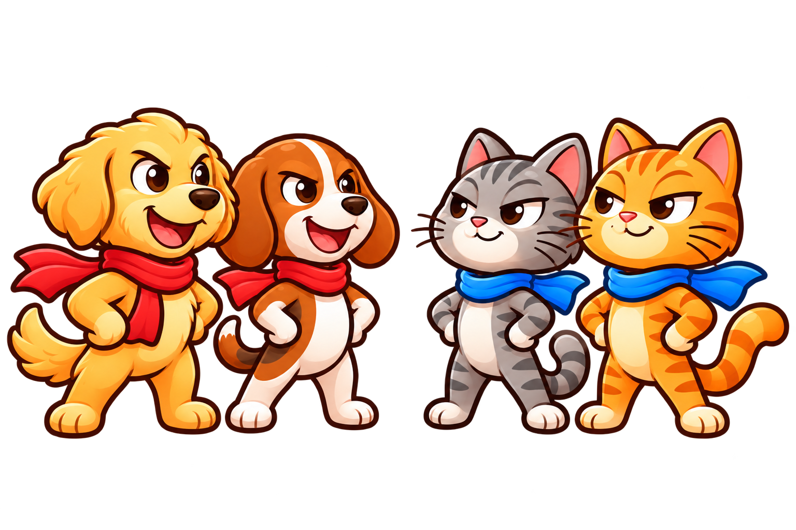
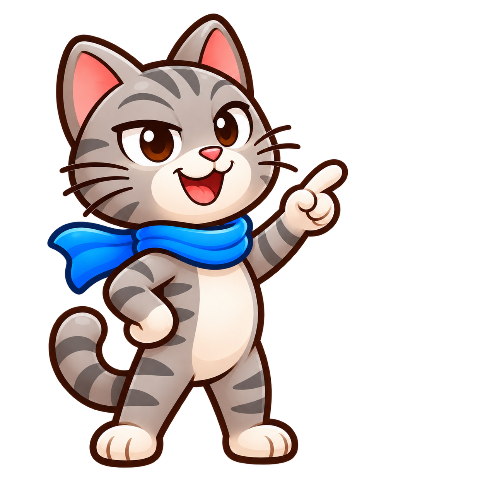
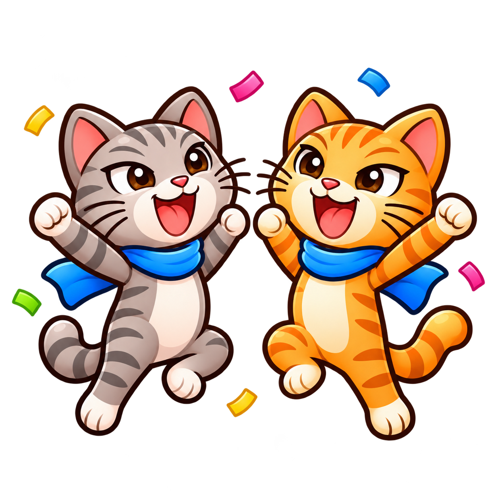
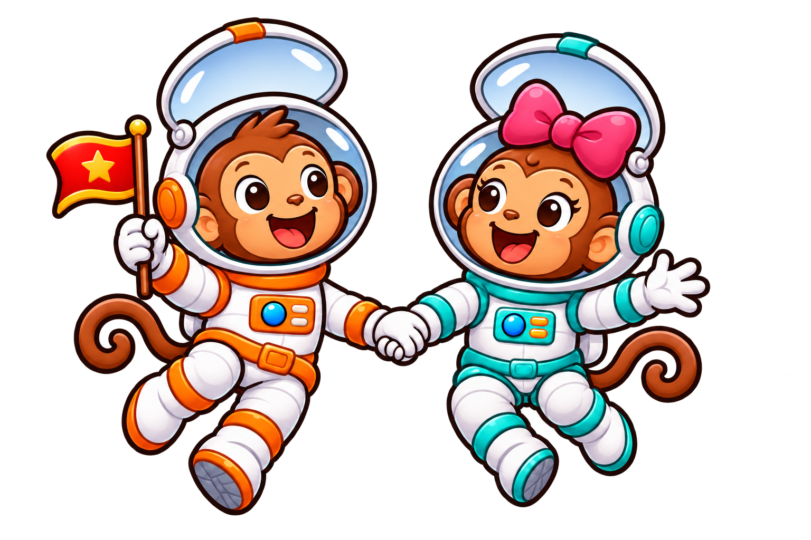
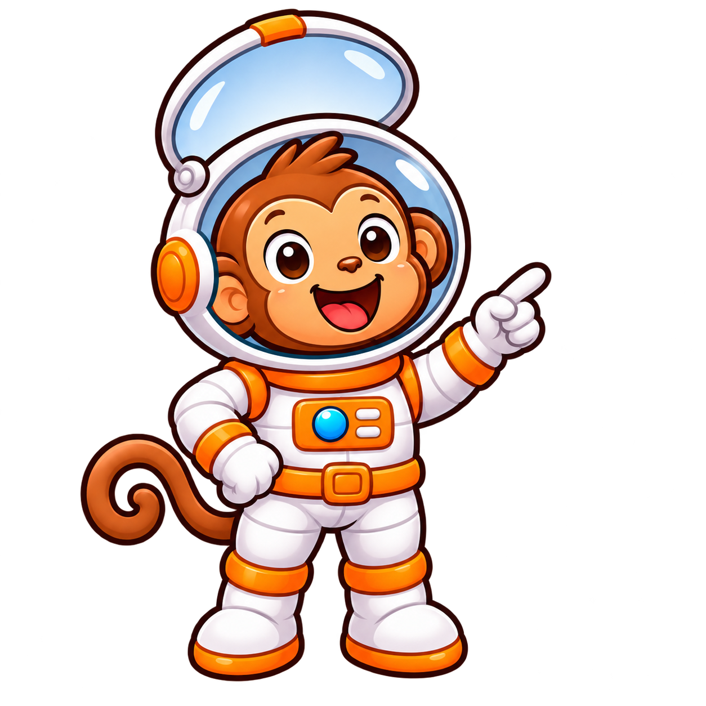
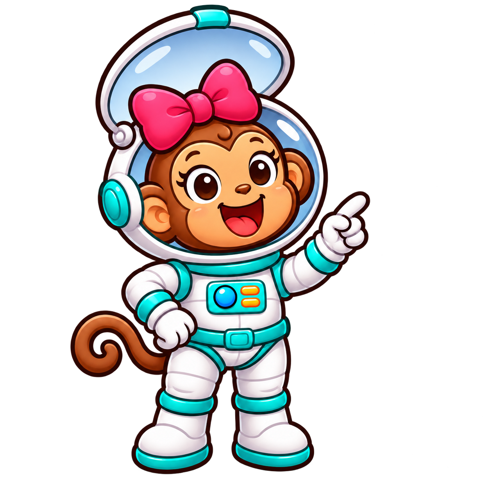
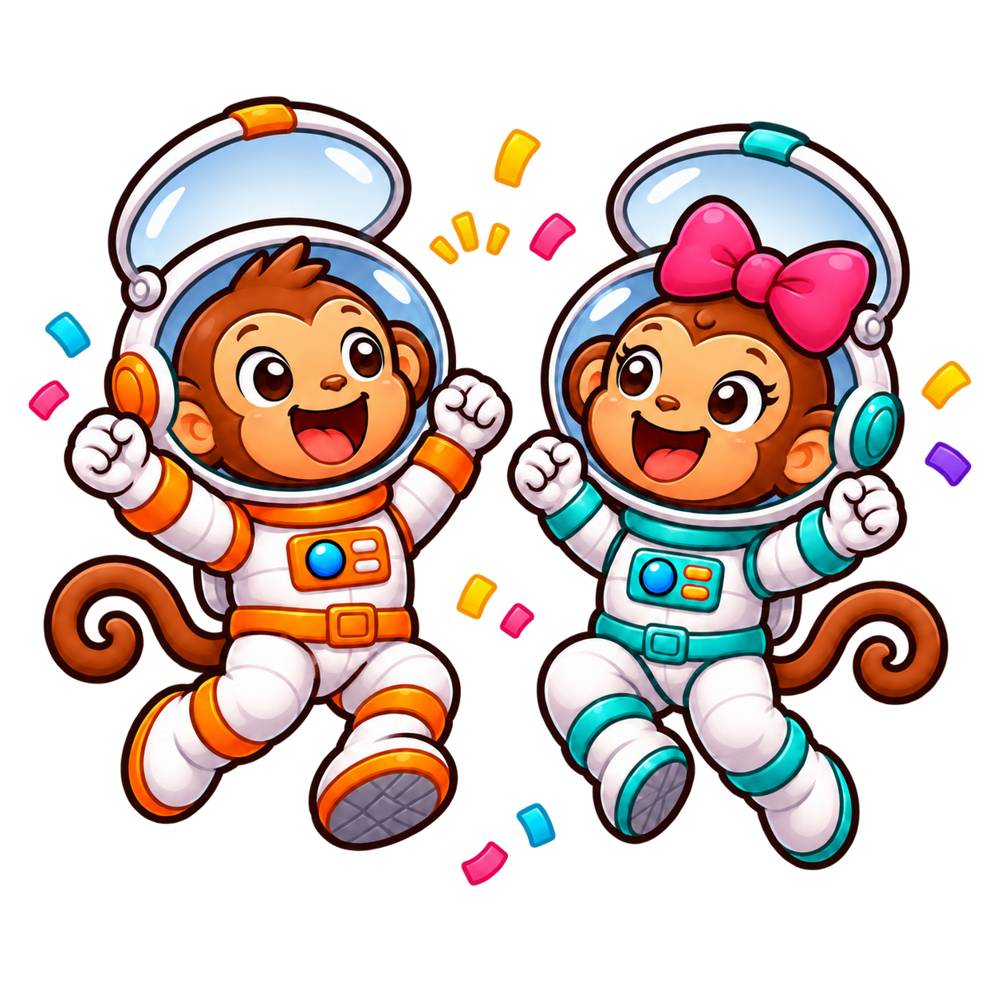
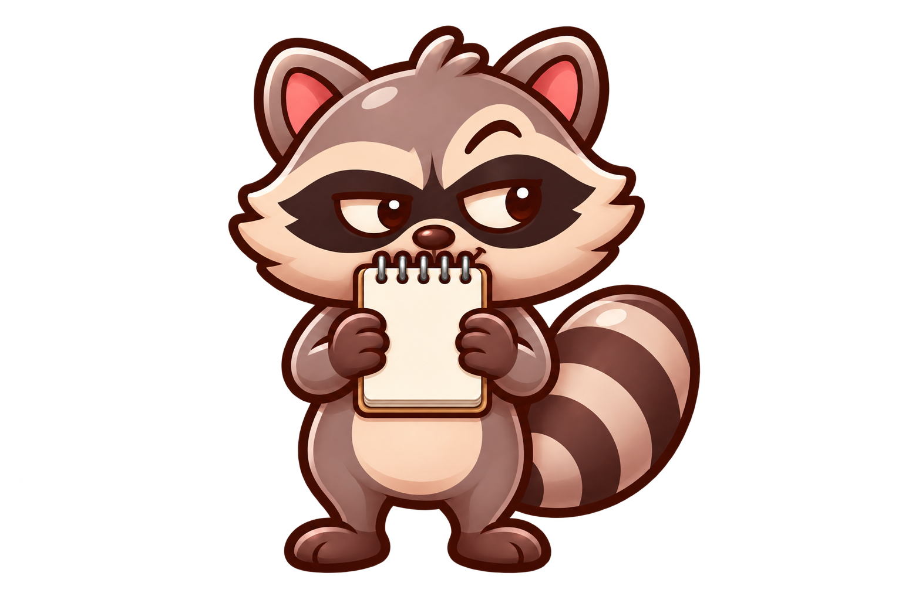
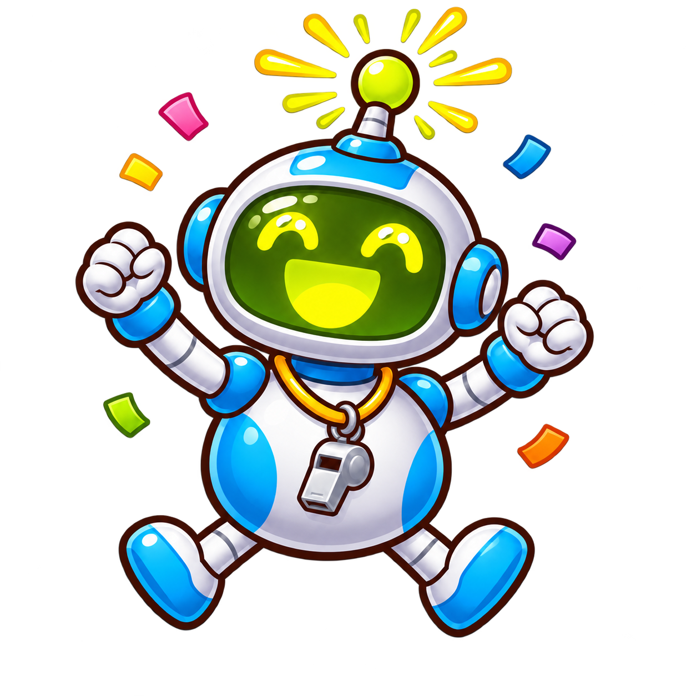

Transparent mascot artwork
30 transparent PNGs · 9 mascot sets · real alpha channels verified. Click an image to open the full PNG. Raccoon uses a blank notepad in every pose. These are review assets, not active in gameplay.
Team vs Team

Banner: dogs vs catsteam-dogs-cats-banner-dogs-vs-cats.pngTutorial guide: dogteam-dogs-cats-tutorial-dog.png
Tutorial guide: catteam-dogs-cats-tutorial-cat.pngCheer: the dog pairteam-dogs-cats-cheer-the-dog-pair.png
Cheer: the cat pairteam-dogs-cats-cheer-the-cat-pair.pngWorlds (goes with the hot air balloon)
Team Worlds (goes with the rocket ship)

Banner: the monkey duoteamworlds-monkeys-banner-the-monkey-duo-v2.png
Tutorial guide: boy monkeyteamworlds-monkeys-tutorial-boy-monkey.png
Tutorial guide: girl monkeyteamworlds-monkeys-tutorial-girl-monkey.png
Cheer: the monkey duoteamworlds-monkeys-cheer-the-monkey-duo.pngBluff

Bannerbluff-raccoon-banner-v2.pngTutorial guidebluff-raccoon-tutorial.pngCheerbluff-raccoon-cheer.pngQuick Game
Bannerquick-robot-banner.pngTutorial guidequick-robot-tutorial.png
Cheerquick-robot-cheer.png